!pip install -q accelerate peft bitsandbytes transformers trlLecture 20 - Large Language Models


- 20.1 Introduction to LLMs
- 20.2 Creating LLMs
- 20.3 Finetuning LLMs
- 20.4 Finetuning Example: Finetuning LlaMA-2 7B
- 20.5 Chat Templates for Formatting LLM Data
- 20.6 LLM Evaluation
- 20.7 Mixture of Experts
- 20.8 Foundation Models
- 20.9 Limitations and Ethical Considerations of LLMs
- References
20.1 Introduction to LLMs
Large Language Models (LLMs) are a class of Deep Neural Networks designed to understand and generate natural human language.
LLMs are a result of many years of research and advancement in NLP and Machine Learning. Important phases in NLP development include:
- Statistical language models (1980s-2000s): developed to predict the probability of a word in a text sequence based on the preceding words. Examples of statistical language models include Bag-Of-Words models based on N-grams. These models were used in tasks like speech recognition and machine translation, but struggled with capturing long-range dependencies and context-related information in text.
- Neural network models (2000-2017): Fully-connected NNs and Recurrent NNs emerged as an alternative to statistical language models. Long Short-Term Memory (LSTM) RNN models were used for sequence-to-sequence tasks (such as machine translation) and they formed the basis for several early LLMs. Similar to statistical language models, RNNs struggled with capturing context-related information. Other limitations of RNNs include the inability to parallelize the data processing, and the gradients can become unstable during training.
- Transformer network models (2017-present): Transformer networks introduced the self-attention mechanism as a replacement for the recurrent layers in RNNs. This architecture enabled the development of more powerful and efficient LLMs, laying the foundation for BERT, GPT, and modern LLMs.
20.1.1 Architecture of Large Language Models
The architecture of modern LLMs is based on Transformer Networks, which we covered in Lecture 19. The main components of the Transformer Networks architecture include:
- Input embeddings, are fixed-size continuous vector embeddings that represent tokens in input text.
- Positional encodings, are fixed-size continuous vectors that are added to the input embeddings to provide information about the relative positions of the tokens in the input text sequence.
- Encoder, is composed of a stack of multi-head attention modules and fully-connected (feed-forward) modules. The encoder block also includes dropout layers, residual connections, and applies layer normalization.
- Decoder, is composed of a stack of multi-head self-attention modules and fully-connected (feed-forward) modules similarly to the encoder block. The decoder block has an additional masked multi-head attention module, that applies masking to the next words in the text sequence to ensure that the module does not have access to those words for predicting the next token.
- Output fully-connected layer, the output of the decoder is passed through a fully-connected (dense, linear) layer to produce the next token in the text sequence.
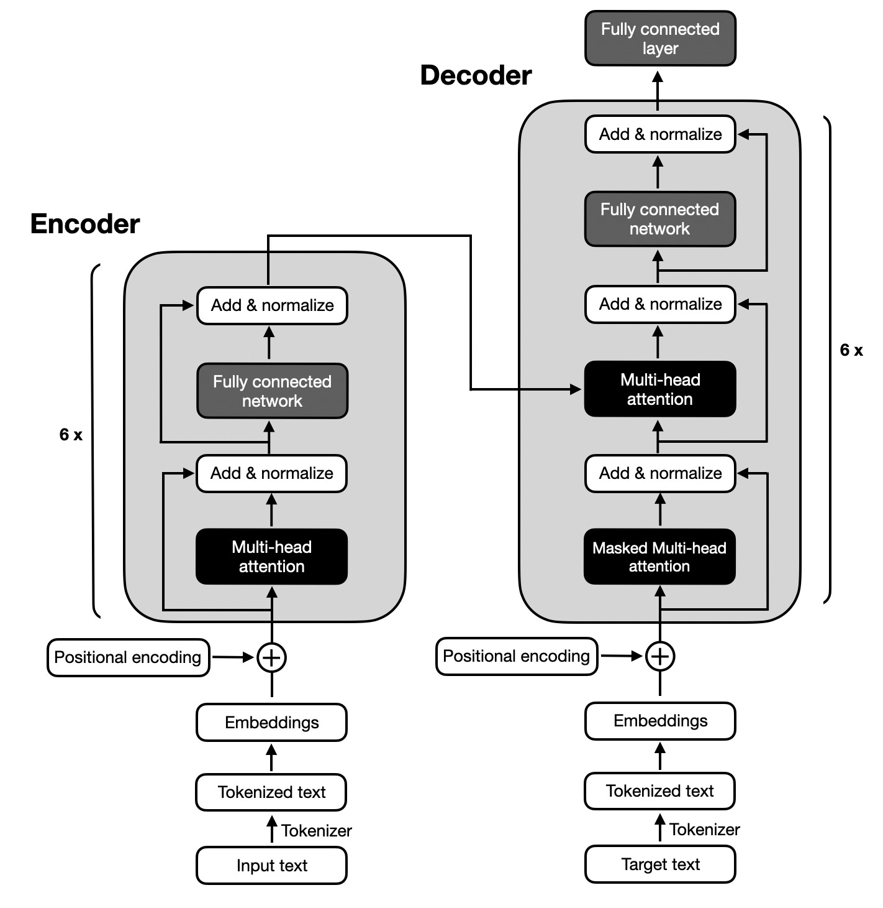
Figure: Transformer architecture. Source: [2].
The architecture of Transformer Networks includes multiple successive encoder and decoder blocks to create deep networks with many layers that allow learning complex patterns in input text. For example, the original Transformer Network has 6 encoder and 6 decoder blocks, as shown in the above figure.
The self-attention mechanism is a key component of the Transformer Network architecture that enables the model to weigh the importance of each token with respect to other tokens in a sequence. It allows to capture long-range dependencies and relationships between the tokens (words) and helps the model to understand the context and structure of the input text sequence.
20.1.2 Variants of Transformer Network Architectures
A variety of LLMs have been developed based on the Transformer Network architecture. The main variants differ in how they use the encoder and decoder of the original Transformer design. The three primary types are:
- Decoder-only models: are autoregressive models that use only the decoder part of the Transformer Network architecture. These models are particularly suitable for generating text and content. The majority of modern LLMs are decoder-only models.
- Encoder-only models: use only the encoder part of the Transformer Network architecture. This makes them well-suited for tasks related to language understanding, rather than text generation. They are used for text classification, sentiment analysis, named entity recognition, and similar tasks. An example is the BERT model.
- Encoder-decoder models: employ the original Transformer Network architecture and combine encoder and decoder sub-networks, enabling to both understand language and generate content. These models are used for translation, summarization, question answering, and similar tasks. An example of this class of models is T5 (Text-to-Text Transfer Transformer).
20.1.3 Modern LLM Architectures
Modern LLMs have evolved significantly from the original Transformer architecture and they incorporate numerous optimizations in their layer design and computational efficiency. These advancements enable models to scale to hundreds of billions or trillions of parameters while maintaining manageable training and inference costs.
The following figure illustrates the architectures of four modern open-source LLMs. Although the architectures of closed-source models such as ChatGPT and Claude are not publicly disclosed, they likely share many of the main design features found in the open-source LLMs.
A brief summary of the main charactistics of the shown LLMs is as follows:
- Multi-Head Attention layers are replaced with more efficient variants such as Grouped-Query Attention layers. While Multi-head Attention assigns a separate set of parameters to each attention head which allows each head to learn distinct query, key, and values projections, Grouped-Query Attention shares key and value projections across groups of heads which reduces memory usage and computational costs.
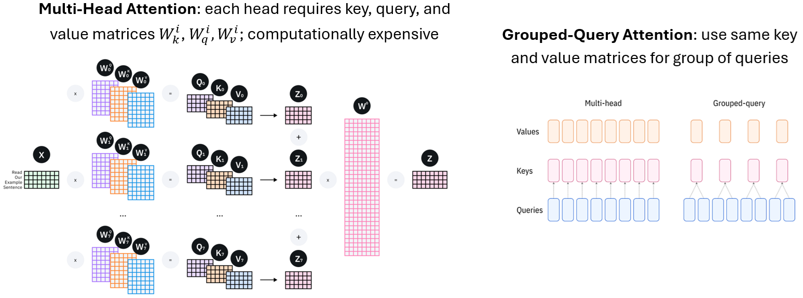
Figure: Grouped-query attention.
Also, decoder-only LLMs use a causal attention mask, which allows each token to attend only to itself and to the preceding tokens in the sequence, and prevents the model from “seeing” future tokens when predicting the next token.

Figure: Causal attention mask.
- Layer Normalization is replaced with RMS Normalization (Root Mean Square Normalization). Differently from Layer Normalization which ensures zero-mean and unit-variance outputs by subtracting the mean and dividing by the standard deviation across the hidden dimension, RMS normalization scales the outputs only by their root mean square. In other words, it does not subtract the mean to center the outputs, and it divides the outputs by the root mean square. This makes it computationally simpler and often more stable in very deep models.
- Rotary Positional Encodings (RoPE) are commonly used in modern LLMs to encode positional information more effectively than traditional fixed (sinusoidal) or learned positional encodings.
- SiLU Activation Function is usually preferred in the feed-forward network block instead of ReLU. An overview of SiLU and other recent activation functions is presented below.
Typical values for the hyperparameters in these LLMs are:
- Embedding dimension, from 2,048 to 7,168.
- Vocabulary size, from from 128K to 151K.
- Supported context length, from 41K to 131K tokens.
- Number of multi-attention heads, from 32 to 64.
- Hidden layer dimension, from 1,536 to 9,728.
- Number of decoder blocks, from 16 to 94.
Also note that the lower two LLMs have Mixture-Of-Experts (MOE) architecture. We will cover this type of architecture in Section 20.7.
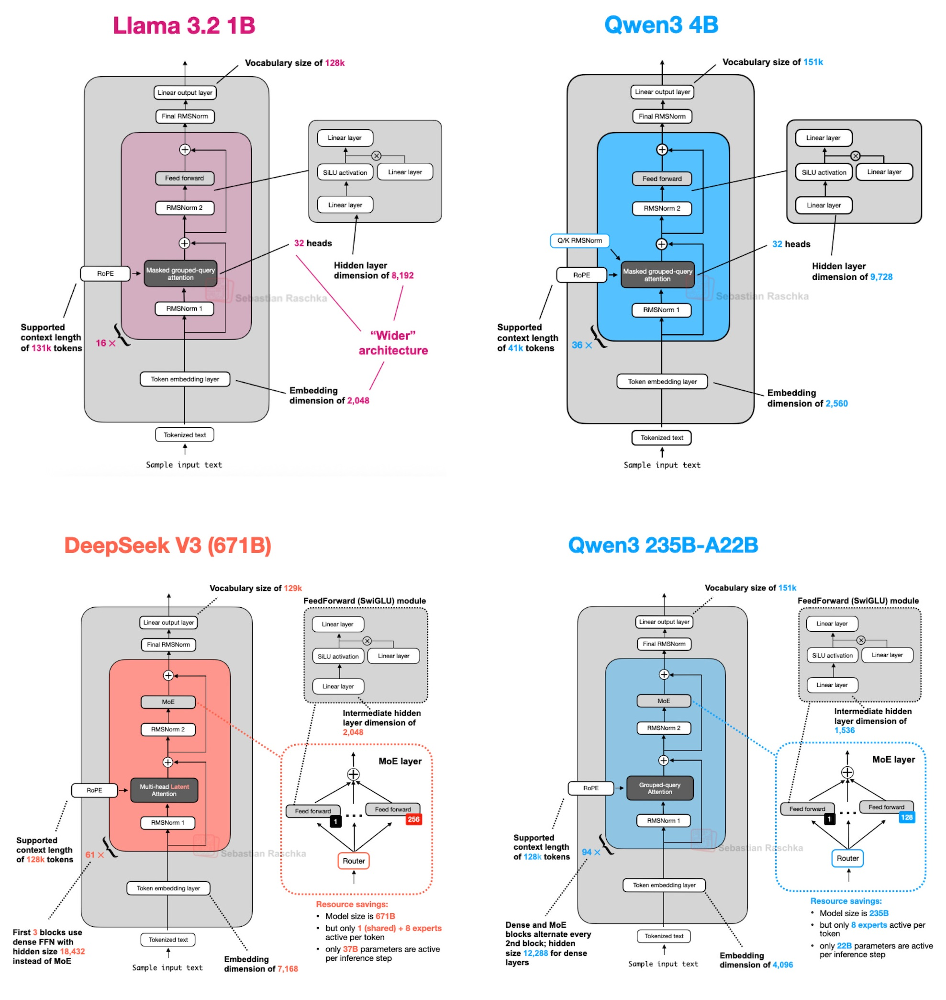
Figure: LLM Architectures. Source: [3].
Activation Functions
In previous lectures, we learned that activation functions introduce non-linearity into NNs, enabling them to learn complex patterns. Traditional activation functions include hyperbolic tangent (tanh), sigmoid, and rectified linear unit (ReLU). In LLMs, activation functions are applied after the dense layers in the feed-forward network, and typically use variants of ReLU activations.
Common activations functions used in modern LLMs are shown in the next figure and include:
- GELU (Gaussian Error Linear Unit): Is similar to ReLU, but instead of outputting zero for negative inputs, it maintains small gradients for negative values. GELU smoothly weights inputs by their probability under a Gaussian distribution. It generally performs better than ReLU in transformer models, although it is more computationally expensive.
- SiLU (Sigmoid Linear Unit): Defined as the product of the input and its sigmoid \(\text{SiLU} = x \cdot \text{Sigmoid}(x) = \frac{x}{1 + e^{-x}}\). It also preserves small negative activations, which helps improve optimization and generalization.
- Swish: Defined as \(\text{Swish}(x) = x \cdot \text{Sigmoid}(\beta x) = \frac{x}{1 + e^{-\beta x}}\), it is similar to SiLU, but it introduces a parameter 𝛽 that controls the slope near zero. When \(𝛽=1\), Swish becomes SiLU. It is not shown in the figure.
- SwiGLU (Swish-Gated Linear Unit) : Defined as \(\text{SwiGLU}(x) = \text{Swish}(xW + b) \cdot (xV + c)\), it is a product of a Swish function and a linear function, with the parameters \(W, V, b,\) and \(c\) being learned during training. In SwiGLU, the term \((xW + b)\) acts as a gate, and controls how much of the input signal passes through. This gating mechanism allows the model to learn complex patterns without additional layers.
- GeGLU (GELU-Gated Linear Unit): Defined as \(\text{GeGLU}(x) = \text{GELU}(xW + b) \cdot (xV + c)\), it is a variant of SwiGLU that replaces Swish with GELU activation to serve as the gate. It enhances representation power and training stability in some architectures. It is not shown in the figure.
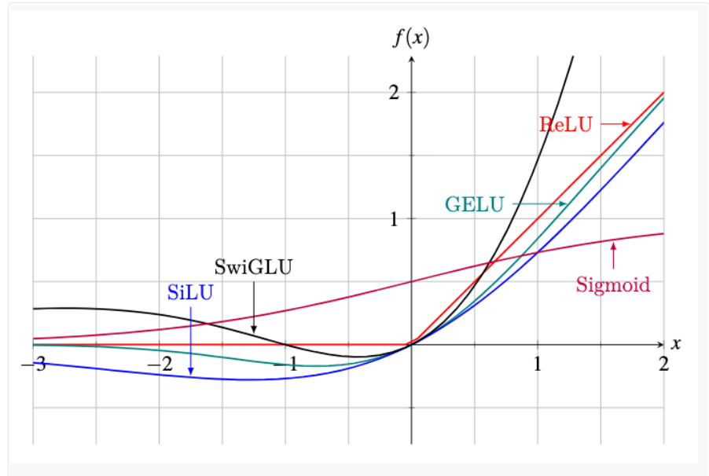
Figure: Activation functions in LLMs. Source: [4]
The following figure provide another visualization of the layers in a LlaMA model, and shows in more detail the gating mechanism in SwiGLU activation functions.
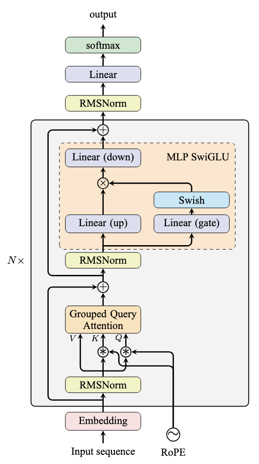
Figure: LlaMA architecture. Source: [4]
Other Characteristics of Modern LLMs
Byte Pair Encoding (BPE) is used in modern LLMS as a tokenization technique to represent text. Instead of using whole words as tokens, BPE breaks text into smaller pieces based on subwords. It starts with individual characters and repeatedly merges the most frequent pairs of characters or subwords in the text. This creates a vocabulary of frequently occurring chunks, and it helps the model to handle rare words and keep the vocabulary smaller. Importantly, BPE avoids the issue of out-of-vocabulary words, because any word can be represented as a sequence of indiviudal characters, if no subwords match that word.
Flash Attention is an optimized implementation of the attention mechanism in Transformers that reduces memory usage and computational cost on GPUs. Unlike the standard attention module which stores large intermediate matrices for all queries, keys, and values, Flash Attention computes attention scores in small blocks and fuses operations, avoiding the need to store these large intermediate tensors. Almost all modern LLMs use Flash Attention to reduce memory requirements and speed up training and inference.
List of LLMs
A large number of LLMs have been developed in the past several years, and new versions are released every few months. Some of the most well-known LLMs (as of Fall 2026) are listed below, grouped into proprietary models (the model weights are not publicly released, and the models are accessed through an app or an API) and open-weight models (the model weights can be downloaded, finetuned, and run locally).
Proprietary LLMs
- GPT (Generative Pretrained Transformer): Developed by OpenAI, the GPT family are the best-known LLMs. The family includes GPT-1, 2, 3, 3.5 (the initial ChatGPT), 4, and 4o (where “o” stands for omni, meaning that the model can process multimodal inputs, including text, images, and audio), the o-series of reasoning models (o1, o3), GPT-5 (2025), and the current GPT-6 family (2026). The number of parameters of recent GPT models has not been disclosed.
- Claude: Developed by Anthropic, Claude models are offered in several tiers that trade off capability against speed and cost: Haiku (fastest), Sonnet, Opus, and Fable (most capable). The current Claude 5 family includes Haiku 5.5, Sonnet 5.5, Opus 5.5, and Fable 5.1. Claude models rank very high on the benchmarking leaderboards, particularly for coding and agentic tasks.
- Gemini: Developed by Google DeepMind, Gemini models are natively multimodal and can process text, images, audio, video, and code. The models are offered in several sizes (Flash-Lite, Flash, Pro), where the smaller models are designed for fast and low-cost inference. The latest generation is Gemini 4 (2026). The number of parameters is not disclosed.
- Grok: Developed by xAI, Grok is trained in part on data from X (formerly Twitter). The earlier Grok-1 model (314B parameters, with a mixture-of-experts (MoE) architecture) was released with open weights, whereas the current Grok 4 series models are proprietary.
Open-weight LLMs
- LlaMA (Large Language Model Meta AI): Developed by Meta AI. LlaMA 2 (2023) was one of the first capable LLMs released for both research and commercial use, and it was followed by LlaMA 3, 3.1 (with up to 405B parameters), and 3.2 (with small 1B and 3B models, and multimodal 11B and 90B models). LlaMA 4 (2025) switched to an MoE architecture, with the models Scout (109B total parameters, 17B active per token) and Maverick (400B total parameters, 17B active per token).
- DeepSeek: Developed by the Chinese company DeepSeek. DeepSeek-V3 is an MoE model with 671B total parameters (37B active per token), trained on 14.8T tokens. DeepSeek-R1 (2025) is a reasoning model trained with reinforcement learning, which attracted wide attention for matching the performance of leading proprietary models at a much lower training cost. It was followed by DeepSeek-V4 (2026).
- Qwen: Developed by Alibaba, Qwen 3 models (2025) range from 0.6B to 235B parameters, with both dense and MoE architectures available, and newer Qwen 3.x versions were released in 2026. Qwen models are among the most widely used open-weight models for finetuning, and we use them in several examples in this course.
- Mistral and Mixtral: Developed by the French company Mistral AI. The Mixtral 8x7B and 8x22B models popularized the MoE architecture in open-weight LLMs, and later Mistral models also employ MoE.
- Gemma: Developed by Google, Gemma is a family of smaller open-weight models built using research from the Gemini models, with sizes suitable for running on a single GPU or on a laptop.
- gpt-oss: Open-weight models released by OpenAI in 2025, with 20B and 120B parameters and MoE architecture.
- Other notable open-weight LLMs include Kimi (Moonshot AI), GLM (Zhipu AI), Phi (small language models by Microsoft), Command (Cohere), and Falcon (Technology Innovation Institute, UAE). In addition, Alpaca (Stanford) and Vicuna (LMSYS) were early chat assistants finetuned from the original LlaMA model in 2023, which demonstrated that relatively small finetuned models can perform well as chat assistants.
20.2 Creating LLMs
Creating modern LLMs typically involves three main phases:
- Pretraining, the model extracts knowledge from large unlabeled text datasets.
- Supervised finetuning, the model is refined to improve the quality of generated responses.
- Alignment, the model is further refined to generate safe and helpful responses that are aligned with human preferences.
20.2.1 Pretraining
The first step in creating LLMs is pretraining the model on massive amounts of text data. The datasets usually consist of a large collection of web pages or e-books comprising billions or trillions of tokens, and ranging from gigabytes to terabytes of text. During pretraining, the model learns the structure of the language, grammar rules, facts about the world, and reasoning rules. And, it also learns biases and harmful content present in the training data.
Pretraining is performed using unsupervised learning techniques. Two common approaches for pretraining LLMs are:
- Causal Language Modeling, also known as autoregressive language modeling, involves training the model to predict the next token in the text sequence given the previous tokens. This approach is more common with modern LLMs.
- Masked Language Modeling, where a certain percentage of the input tokens are randomly masked, and the model is trained to predict the masked tokens based on the surrounding context. BERT and earlier LLMs were pretrained with masked language modeling.
The following figure depicts the pretraining phase with Causal Language Modeling, where the model learns to predict the next word in a sentence given the previous words.
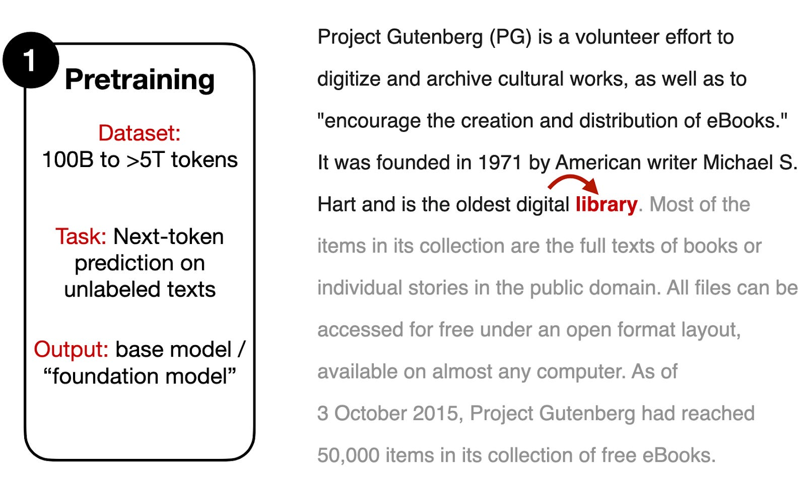
Figure: Pretraining LLMs. Source: [5].
Pretraining allows to extract knowledge from very large unlabeled datasets in unsupervised learning manner, without the need for manual labeling. Or, to be more precise, the “label” in LLMs pretraining is the next word in the text, to which we already have access since it is part of the training text. Such pretraining approach is also called self-supervised training, since the model uses each next word in the text to self-supervise the training.
Note that pretraining LLMs from scratch is computationally expensive and time-consuming. As we stated before, the pretraining phase can cost millions of dollars (e.g., the estimated cost for training GPT-4 is $100 million). Also, pretraining LLMs requires access to large datasets and technical expertise with strong understanding of deep learning workflows, working with distributed software and hardware, and managing model training with thousands of GPUs simultaneously.
20.2.2 Supervised Finetuning
After the pretraining phase, the model is finetuned on a much smaller dataset, which is carefully generated with human supervision. This dataset consists of samples where AI trainers provide both queries (instructions) and model responses (outputs), as depicted in the following figure. That is, instruction is the input text given to the model, and output is the desired response by the model. The model takes the instruction text as input (e.g., “Write a limerick about a pelican”) and uses next-token prediction to generate the output text (e.g., “There once was a pelican so fine …”).
The finetuning process involves updating the model’s weights using supervised learning techniques. The objective of supervised finetuning is to improve the quality of the generated responses by the pretrained LLM.
To compile datasets for supervised finetuning, AI trainers need to write the desired instructions and responses, which is a laborious process. Typical datasets include between 1K and 100K instruction-output pairs. Based on the provided instruction-output pairs, the model is finetuned to generate responses that are similar to those provided by AI trainers.
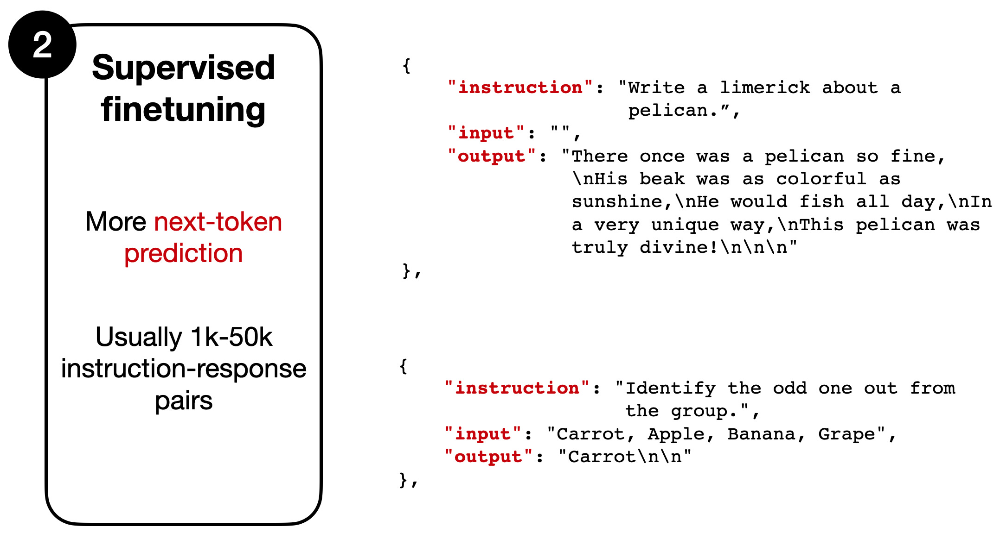
Figure: Finetuning a pretrained LLM. Source: [2].
20.2.3 Alignment
To further improve the performance and align the model responses with human preferences, LLMs are typically refined in one additional phase. This ensures that the responses generated by LLMs are aligned with human preferences, making the models more useful and safer for interaction with users. The alignment phase is essential for reducing harmful, biased, or otherwise undesirable outputs.
Two main strategies for LLM alignment include Reinforcement Learning from Human Feedback (RLHF) with Proximal Policy Optimization (PPO) and Reinforcement Learning with Direct Policy Optimization (DPO).
Reinforcement Learning from Human Feedback (RLHF) with Proximal Policy Optimization (PPO)
LLM alignment with Reinforcement Learning from Human Feedback (RLHF) by employing Proximal Policy Optimization (PPO) is depicted in the figure below and involves the following steps:
- Collect human feedback. For this step a new dataset is created by collecting sample prompts from a database or by creating a set of new prompts. For each prompt, multiple responses are generated by the supervised finetuned model. Next, AI trainers are asked to rank by quality all responses generated by the model for the same prompt, from best to worst. Such feedback is used to define the human preferences and expectations about the responses by the model. Although this ranking process is time-consuming, it is usually less labor-intensive than creating the dataset for supervised finetuning, since ranking the responses is faster than writing the responses.
- Create a reward model. The collected data with human feedback containing the prompts and the ranking scores of the different responses are used to train a Reward Model (denoted with RM in the figure). The task for the Reward Model is to predict the quality of the different responses to a given prompt and output a ranking score. The ranking scores provided by AI trainers are used to establish the ground-truth for training the Reward Model. Note that the Reward Model is a different model than the LLM that is being finetuned, and it only needs to rank the generated responses by the LLM.
- Finetune the LLM with RL. The LLM is finetuned using the Reinforcement Learning (RL) algorithm Proximal Policy Optimization (PPO). For a new prompt, the original LLM generates a response, which the Reward Model evaluates and calculates a reward score \(r_k\). Next, the PPO algorithm uses the reward score \(r_k\) to finetune the LLM so that the total rewards for the generated responses by the LLM are maximized. I.e., the goal is to generate responses by the LLM that maximize the predicted reward scores, and by that, the responses become more aligned with human preferences and are more useful to human users.
- Iterative improvement. The RLHF process is performed iteratively, with multiple rounds of collecting additional feedback from human labelers, re-training the Reward Model, and applying Reinforcement Learning. This leads to continuous refinement and improvement of the LLM’s performance.
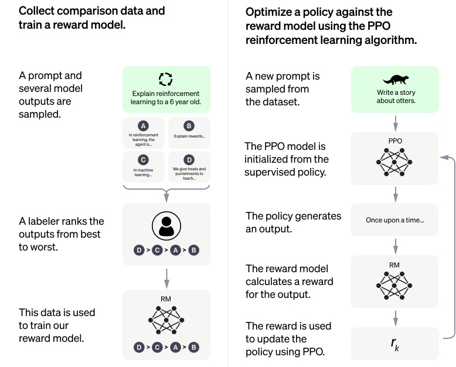
Figure: Reinforcement Learning from Human Feedback. Source: [6].
In summary, the RLHF approach creates a reward system that is augmented by human feedback and is used to teach LLMs which responses are more aligned with human preferences. Through these iterations, LLMs can be better aligned with our human values and can lead to higher-quality responses, as well as improved performance on specific tasks.
Note also that there are several variants of the RLFH approach for finetuning LLMs. For example, LlaMA models employ two reward models: one based on the ranks of helpfulness of the responses, and another based on the ranks of safety of the responses. The final reward score is obtained as a combination of the helpfulness and safety scores.
Reinforcement Learning with Direct Policy Optimization (DPO)
RL with Direct Policy Optimization (DPO) is another approach for LLM alignment that has been popular recently, as it is simpler than RLHF with PPO. DPO uses a different optimization approach in comparison to RL with PPO, where DPO optimizes the LLM directly based on user preferences, without the need for training a separate Reward Model. I.e., DPO aims to directly maximize the reward function to produce model outputs that align with human preferences. Detailed explanation of RL with DPO is beyond the scope of this lecture.
20.3 Finetuning LLMs
Finetuning LLMs involves updating the weights of an LLM model on new data to improve its performance on a specific task and make the model more suitable for a specific use case. It involves additional re-training of the model on a new dataset that is specific to that task. That is, finetuning is a transfer learning technique, where the gained knowledge by a trained model is transferred to improve the performance on a target task.
To adapt LLMs to a custom task, different finetuning techniques have been applied. Full model finetuning is a method that finetunes all the parameters of all the layers of a pretrained model. Full model finetuning typically can achieve the best performance, but it is also the most resource-intensive and time-consuming. Performance-efficient finetuning involves updating only a small number of the parameters to reduce the required computational resources and costs.
In this section, we will demonstrate how to finetune LlaMA 2, an open-source LLM developed by Meta AI. Released in July 2023, LlaMA 2 was the first LLM that is open for both research and commercial use. LlaMA 2 is a successor model to the original LlaMA developed by Meta AI as well. LlaMA 2 has three variants with 7B, 13B, and 70B parameters. It has been trained on 2 trillion tokens, and it has a context window of 4,096 tokens enabling to process large documents. For instance, for the task of summarizing a pdf document the context can include the entire text of the pdf document, or for dialog with a chatbot the context can include the previous conversation history with the chatbot. Furthermore, specialized versions of LlaMA 2 include LlaMA-2-Chat optimized for dialog generation, and Code LlaMA optimized for code generation tasks.
20.3.1 Parameter-Efficient Finetuning (PEFT)
Finetuning LLMs is challenging since the large number of parameters of modern LLMs requires substantial computational resources for storing the models and for re-training the weights. Thus, it can be prohibitively expensive for most users. For instance, to load the largest version of the LlaMA 2 model with 70 billion parameters into the GPU memory requires approximately 280 GB of RAM. Full model finetuning of LlaMA 2 model with 70 billion parameters requires 780 GB of GPU memory. This is equivalent to 10 A100s GPUs that have 80 GB RAM each, or 48 T4 GPUs that have 16 GB RAM each. The free version of Google Colab offers one T4 GPU with 16 GB RAM.
Fortunately, several Parameter-Efficient FineTuning (PEFT) techniques have been introduced recently, which allow updating only a small number of the model weights. Consequently, these techniques enable finetuning LLMs using lower computational resources by reducing memory usage and speeding up the training process. PEFT techniques include prompt tuning, prefix tuning, adding additional adapter layers in the transformer block, and low-rank adaptation (LoRA).
Hugging Face has developed a PEFT library that contains implementations of common finetuning techniques. We will use the PEFT library to finetune LlaMA 2 on a custom dataset using a quantized version of the LoRA method.
20.3.2 Low-Rank Adaptation (LoRA)
Low-Rank Adaptation (LoRA) involves freezing the pretrained model and finetuning a small number of additional weights. After the additional weights are updated, these weights are merged with the weights of the original model.
This is depicted in the following figure, where regular finetuning is shown in the left figure, and it involves updating all weights \(W\) in a pretrained model. As we know, the weight update matrix \(\nabla{W}\) is calculated based on the negative gradient of the loss function. Finetuning with LoRA is shown in the right figure, where the weight update matrix \(\nabla{W}\) is decomposed into two smaller matrices, \(\nabla{W}=W_A*W_B\), with size \(W_A \in \mathbb{R}^{A \times r}\) and \(W_B \in \mathbb{R}^{r \times B}\). The matrices \(W_A\) and \(W_B\) are called low-rank adapters, since they have lower rank \(r\) in comparison to the original weight matrix, i.e., they have fewer number of columns or rows, respectively. During training, gradients are backpropagated only through the matrices \(W_A\) and \(W_B\), while the pretrained weights \(W\) remain frozen.
For instance, if the full weight matrix \(W\) is of size \(100 \times 100\), this is equal to \(10,000\) elements (model weights). If we decompose the weight update matrix \(\nabla{W}\) by using rank \(r=5\), the total number of elements of \(W_A \in \mathbb{R}^{100 \times 5}\) and \(W_B \in \mathbb{R}^{5 \times 100}\) will be \(500 + 500 = 1,000\). Hence, with LoRA the number of elements was reduced from \(10,000\) to \(1,000\).
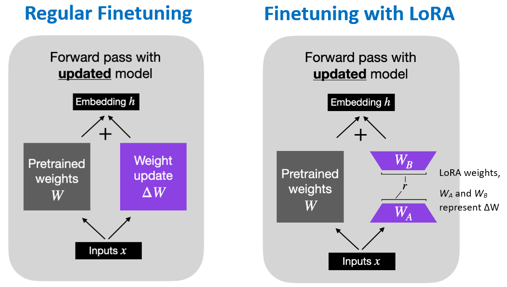
Figure: Regular finetuning versus LoRA finetuning . Source: [7].
20.3.3 Quantized LoRA (QLoRA)
Quantized LoRA (QLoRA) is a modified version of LoRA that uses 4-bit quantized weights. Quantization reduces the precision for the values of the network weights. In TensorFlow and PyTorch, the network weights by default are stored with 32-bit floating-point precision. With quantization techniques, the network weights are stored with lower precision, such as 16-bit, 8-bit, or 4-bit precision.
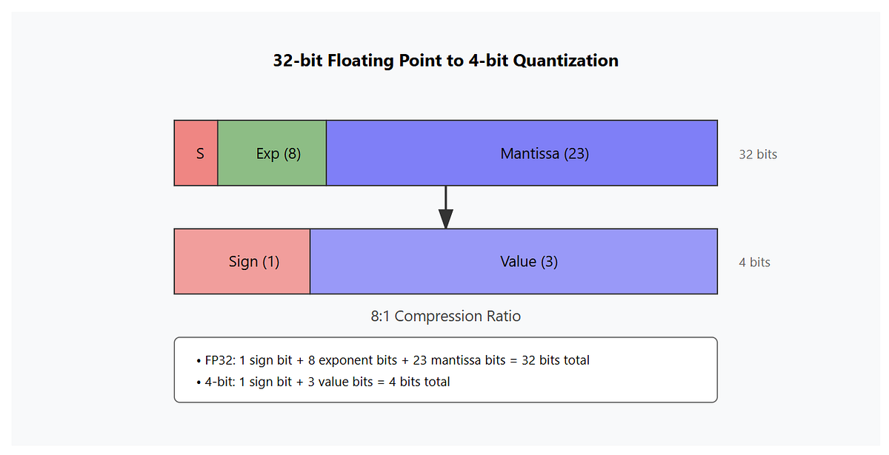
Figure: Quantization of 32-bit floating-point weights to 4-bit precision.
This approach introduces a new 4-bit quantization format called “nf4” (normalized float 4) where the range of values is normalized to the range [-1, 1] by dividing the values evenly into 16 bins (4-bit allows \(2^4=16\) values). While 4-bit floating point precision (fp4) applies non-linear floating point representation of the original values and results in unequal spacing of the values, normalized float 4 precision (nf4) applies linear quantization of the original values into equally spaced bins and follows a normal distribution.
QLoRA combines 4-bit quantization of the model weights in the pretrained model and LoRA that adds low-rank adaptor layers. The benefits of QLoRA with 4-bit quantization of the model weights include reduced size of the model and increased inference speed, while having a modest decrease in the overall model performance.
For example, with QLoRA a 70B parameter model can be finetuned with 48 GB VRAM, in comparison to 780 GB VRAM required for finetuning all weights of the original model (using 32-bit floating-point precision). Similarly, QLoRA enables to train the smaller version of LlaMA 2 with 7B parameters on a T4 GPU (provided by Google Colab) that has 16 GB VRAM. In cases when only a single GPU is available, using quantization is necessary for finetuning LLMs.
20.4 Finetuning Example: Finetuning LlaMA-2 7B
Import Libraries
We will use the Hugging Face library for model finetuning, and we will begin by installing the required libraries and importing modules from these packages. These include accelerate (for optimized training on GPUs), peft (for Parameter-Efficient Fine-Tuning), bitsandbytes (to quantize the LlaMA model to 4-bit precision), transformers (for working with Transformer Networks), and trl (for supervised finetuning, where trl stands for Transformer Reinforcement Learning).
import os
import torch
from datasets import load_dataset
from transformers import (AutoModelForCausalLM, AutoTokenizer, BitsAndBytesConfig,
TrainingArguments, pipeline, logging)
from peft import LoraConfig, PeftModel, get_peft_model, prepare_model_for_kbit_training
from trl import SFTTrainerLoad the Model
We will download the smallest version of LlaMA-2-Chat model with 7B parameters from Hugging Face. Understandably, the larger LlaMA 2 models with 13B and 70B parameters require larger memory and computational resources for finetuning.
Also, we will use the BitsAndBytes library to apply quantization with 4-bit precision format for loading the model weights. Loading a quantized model reduces the GPU memory requirement and makes it possible to train the model with a single GPU, as a tradeoff for some loss in precision. In the next cell we define the configuration for BitsAndBytes, and afterward we will use the configuration in the from_pretrained function to load the LlaMA 2 model. The parameters in BitsAndBytes configuration are described in the commented code below.
The compute type in the cell below refers to the data format for performing computations, and it can be either “float16”, “bfloat16”, or “float32” because computations are performed in either 16 or 32-bit precision. In this case, we specified to use "torch.float16" compute data type (i.e., 16-bit floating-point numbers) for memory-saving purposes. Note that although the model weights are loaded with 4-bit precision, the weights are dequantized to 16-bit precision for performing the calculations for the forward and backward passes through the network, since 4-bit precision is too low for performing the calculations.
# The model is Llama 2 from the Hugging Face hub
model_name = "NousResearch/Llama-2-7b-chat-hf"# BitsAndBytes configuraton
bnb_config = BitsAndBytesConfig(
# Load the model using 4-bit precision
load_in_4bit=True,
# Quantization type (fp4 or nf4)
# nf4 is "normalized float 4" format, uses an asymmetric quantization scheme with 4-bit precision
# optimized for normally distributed weights (better than fp4 for neural networks)
bnb_4bit_quant_type="nf4",
# Compute dtype for 4-bit models
bnb_4bit_compute_dtype= torch.float16,
# Use double quantization for 4-bit models
# Double quantization applies further quantization to the quantization constants
bnb_4bit_use_double_quant=True,
)We will use AutoModelForCausalLM to load the model with the from_pretrained function, and we will use the above BitesAndBytes configuration to load the model parameters with 4-bit precision.
In the following cell we will load the corresponding tokenizer for LlaMA 2 by using AutoTokenizer and from_pretrained.
# Load Llama 2 model from Hugging Face
model = AutoModelForCausalLM.from_pretrained(
model_name,
# Apply quantization by using the bnb configuration from the previous cell
quantization_config=bnb_config,
# Don't cache the model weights, load the model weights from Hugging Face
use_cache=False,
# Trade-off parameter in Llama-2, less important, it should be 1 in most cases
pretraining_tp=1,
# Load the entire model on the GPU if available
device_map="auto"
)The code in the next cell prepares the model for training with reduced precision of model weights (to 4-bit in this case). As we explained earlier, it reduces memory usage and speed up training, and allows fine-tuning very large models on limited GPU resources.
# Prepare model for k-bit training
model = prepare_model_for_kbit_training(model)# Load tokenizer from Hugging Face
tokenizer = AutoTokenizer.from_pretrained(model_name, trust_remote_code=True)
# Needed for LlaMA tokenizer
tokenizer.pad_token = tokenizer.eos_token
# Fix an overflow issue with fp16 training
tokenizer.padding_side = "right"Define LoRA Configuration
Next, the model will be packed into the LoRA format, which will introduce additional weights and keep the original weights frozen. The parameters in the LoRA configuration include:
r, determines the rank of update matrices, where lower rank results in smaller update matrices with fewer trainable parameters, and greater rank results in more trainable parameters but more robust model.lora_alpha, controls the LoRA scaling factor.lora_dropout, is the dropout rate for LoRA layers.bias, specifies if the bias parameters should be trained.task_type, is Causal LLM for the considered task.
# LoRA configuration
peft_config = LoraConfig(
# LoRA rank dimension (controls capacity of LoRA layers)
r=64,
# Scaling parameter for LoRA updates (higher alpha increases contribution of LoRA weights)
lora_alpha=16,
# Dropout rate for LoRA layers
lora_dropout=0.1,
# Specifies whether to add bias in LoRA layers
bias="none",
# "CAUSAL_LM" indicates that LoRA is applied for causal language modeling
task_type="CAUSAL_LM",
# List of modules to which LoRA is applied (Q, K, V, and output projections)
target_modules=["q_proj", "k_proj", "v_proj", "o_proj"]
)In order to understand how LoRA impacts the finetuning of LlaMA 2 model, let’s compare the total number of trainable parameters in LLaMA 2 and the trainable parameters for the LoRA model. As we can note in the cell below, the LoRA model has about 67M trainable parameters, which is about 1% of the 7B total trainable parameters in LlaMA 2. This makes it possible to finetune the model on a single GPU.
def print_number_of_trainable_model_parameters(model, use_4bit=True):
trainable_model_params = 0
all_model_params = 0
for _, param in model.named_parameters():
all_model_params += param.numel()
if param.requires_grad:
trainable_model_params += param.numel()
if use_4bit:
all_model_params *= 2
trainable_model_params *= 2
print(f"Total model parameters: {all_model_params:,d}. Trainable model parameters: {trainable_model_params:,d}. Percent of trainable parameters: {100 * trainable_model_params/ all_model_params:4.2f} %")# compare the number of trainable parameters to QLoRA model
qlora_model = get_peft_model(model, peft_config)
# print trainable parameters
print_number_of_trainable_model_parameters(qlora_model)Total model parameters: 7,135,043,584. Trainable model parameters: 134,217,728. Percent of trainable parameters: 1.88 %Load the Dataset
We will use the Lamini docs dataset, which contains questions and answers about the framework Lamini for training and developing Language Models. The dataset contains 1,260 question/answer pairs. Here are a few samples from the dataset.
| Question | Answer |
|---|---|
| Does Lamini support generating code | Yes, Lamini supports generating code through its API. |
| How do I report a bug or issue with the Lamini documentation? | You can report a bug or issue with the Lamini documentation by submitting an issue on the Lamini GitHub page. |
| Can Lamini be used in an online learning setting, where the model is updated continuously as new data becomes available? |
It is possible to use Lamini in an online learning setting where the model is updated continuously as new data becomes available. However, this would require some additional implementation and configuration to ensure that the model is updated appropriately and efficiently. |
A preprocessed version of the dataset in a format that matches the instruction-output pairs for LlaMA 2 is available on Hugging Face, and we will directly load the preprocessed version of the dataset.
# Lamini dataset
dataset = load_dataset("mwitiderrick/llamini_llama", split="train")print(f'Number of prompts: {len(dataset)}')Number of prompts: 1260Model Training
The next cell defines the training arguments, and the commented notes describe the arguments. Note that we will finetune the model for only 1 epoch (if we finetune for more than 1 epoch it will take longer but it will probably result in improved performance).
# Set training parameters
training_arguments = TrainingArguments(
# Output directory where the model predictions and checkpoints will be stored
output_dir="./results",
# Number of training epochs
num_train_epochs=1,
# Batch size per GPU for training
per_device_train_batch_size=8,
# Number of update steps to accumulate the gradients for
# Helps simulate a larger batch size without increasing memory usage
gradient_accumulation_steps=2,
# Optimizer to use (memory-efficient Adam with weight decay)
optim="paged_adamw_32bit",
# Save checkpoint every number of steps
save_steps=0,
# Log updates every number of steps
logging_steps=10,
# Initial learning rate for the optimizer
learning_rate=2e-4,
# Weight decay to prevent overfitting
weight_decay=0.001,
# Enable fp16/bf16 training (set bf16 to True with an A100)
fp16=False,
bf16=False,
# Maximum gradient norm (gradient clipping to prevent exploding gradients)
max_grad_norm=0.3,
# Learning rate scheduler type
lr_scheduler_type="cosine",
# Training steps used for warmup
warmup_steps=100,
# Disable reporting to external tools (e.g., WandB, TensorBoard)
report_to="none"
)Next, we will use the SFTTrainer class in Hugging Face to create an instance of the model by passing the loaded LlaMA 2 model, training dataset, PeFT configuration, tokenizer, and the training arguments. SFTTrainer stands for Supervised Fine-Tuning Trainer.
# Set supervised finetuning parameters
trainer = SFTTrainer(
model=model,
args=training_arguments,
train_dataset=dataset,
peft_config=peft_config,
processing_class=tokenizer
)/usr/local/lib/python3.13/dist-packages/peft/mapping_func.py:148: UserWarning: You are trying to modify a model with PEFT for a second time. If you want to reload the model with a different config, make sure to call `.unload()` before.
warnings.warn(
/usr/local/lib/python3.13/dist-packages/peft/tuners/tuners_utils.py:331: UserWarning: Already found a `peft_config` attribute in the model. This will lead to having multiple adapters in the model. Make sure to know what you are doing!
warnings.warn(Finally, we can train the model with the train() function in Hugging Face. Note that there are 1,260 samples and batch size 8 with gradient accumulation 2, threfore 1,260 / (8 × 2) = 78.75, which rounds to 79 training steps.
In the output of the cell we can see the loss for every 10 training steps, because we set logging_steps=10 in the training arguments.
The training took about 25 minutes on a T4 GPU on Google Clab Pro.
# Train the model
trainer.train()/usr/local/lib/python3.13/dist-packages/torch/_dynamo/eval_frame.py:1548: UserWarning: torch.utils.checkpoint: the use_reentrant parameter should be passed explicitly. Starting in PyTorch 2.9, calling checkpoint without use_reentrant will raise an exception. use_reentrant=False is recommended, but if you need to preserve the current default behavior, you can pass use_reentrant=True. Refer to docs for more details on the differences between the two variants.
return fn(*args, **kwargs)
/usr/local/lib/python3.13/dist-packages/torch/_dynamo/eval_frame.py:1548: UserWarning: torch.utils.checkpoint: the use_reentrant parameter should be passed explicitly. Starting in PyTorch 2.9, calling checkpoint without use_reentrant will raise an exception. use_reentrant=False is recommended, but if you need to preserve the current default behavior, you can pass use_reentrant=True. Refer to docs for more details on the differences between the two variants.
return fn(*args, **kwargs)
[79/79 24:36, Epoch 1/1]
| Step | Training Loss |
|---|---|
| 10 | 3.638933 |
| 20 | 3.406825 |
| 30 | 2.786673 |
| 40 | 2.131490 |
| 50 | 1.371155 |
| 60 | 0.834439 |
| 70 | 0.669950 |
TrainOutput(global_step=79, training_loss=1.9463686218744591, metrics={'train_runtime': 1498.037, 'train_samples_per_second': 0.841, 'train_steps_per_second': 0.053, 'total_flos': 1.473014285402112e+16, 'train_loss': 1.9463686218744591, 'entropy': 0.6207017054160436, 'mean_token_accuracy': 0.8574048148261176, 'num_tokens': 272550.0, 'epoch': 1.0})Generate Text
To generate text with the trained model we will use the Hugging Face pipeline with the task set to "text-generation". We can set the length of the generated text tokens with the max_length argument.
The output displays the start <s>[INST] and end [/INST] of the instruction prompt, followed by the generated output by the model.
# Set model to inference mode
model.config.use_cache = True
model.eval()
# User's prompt
prompt = "What are Lamini models?"
# Run text generation pipeline with the finetuned model
pipe = pipeline(task="text-generation", model=model, tokenizer=tokenizer,
max_length=200, do_sample=True, temperature=0.7, top_p=0.9, repetition_penalty=1.2)
# Generate response
output = pipe(f"<s>[INST] {prompt} [/INST]")
# Print the response
print(output[0]['generated_text'])<s>[INST] What are Lamini models? [/INST] Lamini is a platform for building and training customizable AI models. hopefully, this information will help you understand what Lamini models are:
Lamini provides a wide range of pre-trained language models that can be fine-tuned to suit specific use cases or tasks. These models cover various NLP applications such as text classification, sentiment analysis, named entity recognition (NER), question answering, dialog generation, and more. Here are some examples of the types of models available on Lamini's platform:
1. TextClassification - This model has been trained to classify text into categories like positive vs negative sentiment. You may train it further to recognize additional patterns in your dataset by fine-tuning the model with new data.
2. Dialogflow - The purpose of the Dialogflow model is to generate responses based on user input. It is often used to build chat# Another prompt
prompt = "How to evaluate the quality of the generated text with Lamini models"
output = pipe(f"<s>[INST] {prompt} [/INST]", max_new_tokens=500)
print(output[0]['generated_text'])[transformers] Both `max_new_tokens` (=500) and `max_length`(=200) seem to have been set. `max_new_tokens` will take precedence. Please refer to the documentation for more information. (https://huggingface.co/docs/transformers/main/en/main_classes/text_generation)<s>[INST] How to evaluate the quality of the generated text with Lamini models [/INST] Evaluating the quality of text generated by a language model like Lamini can be done through various metrics and methods. everybody has different opinions about what makes good writing, so it is crucial that you define evaluation criteria based on your goals and objectives before evaluating the output. Here are some common ways to assess the quality of text generated from Lamini:
1. Linguistic accuracy: Check for proper grammar usage, punctuation, spelling, capitalization, and syntax rules in the output. You may use tools such as Grammarly or Ginger to help with this step.
2. Fluency: Assess how well the output reads like natural language instead of machine-generated text. Consider factors like coherence, flow, and continuity while reading the output.
3. Relevance: Ensure the output answers questions directly related to the prompt or topic given without going off-topic or irrelevant. For instance, if generating content around specific topics, ensure the output covers all relevant details.
4. Cohesion: Analyze whether the pieces form an integrated whole rather than seeming disconnected or lacking internal consistency within the output. This includes evaluating transitions between sentences, logical connections, and consistent tone throughout.
5. Contextual relevancy: Examine how accurately the output addresses potential customer concerns regarding purchasing decisions; assess its persuasive effectiveness when promoting products or services.
6. Content completeness: Determine whether there's enough information provided in response to user queries.
7. Uniqueness: Check that unique responses aren’t repeated multiple times within each generated set (i.e., don’t generate redundant content).
8. Customizability: Verify that customizations made during setup were successfully applied across every generated sample (i.e., ensure both variations remain relevant).
9. Emotional impact: Discern how emotionally engaging or compelling the output is toward achieving desired outcomes such as increasing brand affinity or encouraging desired behaviors among customers.
10. Human readability: Evaluate how easy it is to understand and comprehend the generator's responses, considering their format and presentation. Avoid difficulties encountered when trying to decipher code or algorithms.
11. Factually correctness: Validate factual claims present in generated text# Another prompt
prompt = "Write a poem about Data Science. Use line breaks between verses."
output = pipe(f"<s>[INST] {prompt} [/INST]", temperature=0.75, top_p=0.88, top_k=40, max_new_tokens=800)
print(output[0]['generated_text'])[transformers] Both `max_new_tokens` (=800) and `max_length`(=200) seem to have been set. `max_new_tokens` will take precedence. Please refer to the documentation for more information. (https://huggingface.co/docs/transformers/main/en/main_classes/text_generation)<s>[INST] Write a poem about Data Science. Use line breaks between verses. [/INST] Sure! Here's a poem about data science:
Data, oh data, so vast and deep,
A universe of numbers, at our feet.
From the stars to social media streams,
We analyze it all with algorithms that gleam.
With machine learning models strong and bright,
We uncover secrets hidden from sight.
Insight is found where we least expect,
And answers are revealed by degrees.
Data helps us make decisions wise and sound,
And guides us through life's journey profound.
It teaches us how things work in this world,
And opens doors to knowledge unfurled.
So let's embrace this gift from above,
This treasure trove of data love.
For with each new discovery made,
Our understanding grows beyond the shade.20.5 Chat Templates for Formatting LLM Data
In a chat context, LLMs have a continuing conversation with users consisting of one or more messages. Chat conversations are typically represented as a list of dictionaries, where each dictionary contains role and content keys. I.e., each message is assigned a “role” and it contains the “text” of the message.
The roles are typically:
- “system” for directives on how the model should behave
- “user” for messages from the user
- “assistant” for messages from the LLM
An example is provided below, showing the three roles: system, user, and assistant. The prompt to the LLM includes a system message that is prepended to the user’s message, and the completion by the LLM is the response by the assistant.
[
{"role": "system", "content":"You are a helpful and honest assistant."},
{"role":"user", "content":"What is the capital city of U.S."},
{"role": "assistant","content":"The capital of the United States is Washington, D.C."}
]A system message is usually provided at the beginning of the conversation and includes guidance about how the model should behave in the chat. System messages can be short, such as “Speak like a pirate”, or they can be long and contain a lot of context to define the behavior of the LLM. For instance, when you open a new chat with ChatGPT, an internal system message is automatically prepended to your first prompt; however, the system message is not shown to the user. Also, instruction-following datasets include the system message as the first part of the question for the assistant.
In ongoing multi-turn conversations, the messages list continues to grow with alternating user and assistant messages. Each exchange is added to the list in order.
The role information is injected by adding control tokens between messages to indicate the relevant roles and the message boundaries. Let’s inspect the first question-answer pair in the Lamini dataset shown below, which has been formatted for the LlaMA 2 model. We can notice that LLaMA 2 uses special tokens for start-of-sequence <s> and end-of-seqence </s> to define the beginnings and ends of conversations. It uses the start-of-instruction tag [INST] and end-of-instruction tag [/INST] for single instruction-response pairs. I.e., everything inside [INST] and [/INST] is structured into system, user, and assistant roles. The system message is wrapped in <<SYS>> and <</SYS>> tags. The text ### Question marks the user’s instruction/question for the model. The text ### Answer: contains the response by the assistant.
dataset[0]{'text': " <s>[INST] <<SYS>> You are a honest and helpful assistant who helps users find answers quickly from the given docs about Lamini. \nIf a question does not make any sense, or is not factually coherent, explain why instead of answering something not correct.\nIf you don't know the answer to a question, please don't share false information.\nIf the answer can not be found in the text please respond with `Let's keep the discussion relevant to Lamini docs`. <</SYS>>\n\n### Question: How can I evaluate the performance and quality of the generated text from Lamini models?\n### Answer: There are several metrics that can be used to evaluate the performance and quality of generated text from Lamini models, including perplexity, BLEU score, and human evaluation. Perplexity measures how well the model predicts the next word in a sequence, while BLEU score measures the similarity between the generated text and a reference text. Human evaluation involves having human judges rate the quality of the generated text based on factors such as coherence, fluency, and relevance. It is recommended to use a combination of these metrics for a comprehensive evaluation of the model's performance.\n[/INST] </s>\n"}print(dataset[0]['text']) <s>[INST] <<SYS>> You are a honest and helpful assistant who helps users find answers quickly from the given docs about Lamini.
If a question does not make any sense, or is not factually coherent, explain why instead of answering something not correct.
If you don't know the answer to a question, please don't share false information.
If the answer can not be found in the text please respond with `Let's keep the discussion relevant to Lamini docs`. <</SYS>>
### Question: How can I evaluate the performance and quality of the generated text from Lamini models?
### Answer: There are several metrics that can be used to evaluate the performance and quality of generated text from Lamini models, including perplexity, BLEU score, and human evaluation. Perplexity measures how well the model predicts the next word in a sequence, while BLEU score measures the similarity between the generated text and a reference text. Human evaluation involves having human judges rate the quality of the generated text based on factors such as coherence, fluency, and relevance. It is recommended to use a combination of these metrics for a comprehensive evaluation of the model's performance.
[/INST] </s>
Unfortunately, there is no standard regarding which tokens to use for those purposes, and different LLMs have been trained with varying formatting and control tokens. This can be a challenge for users, because using the wrong format may confuse the model and result in poor quality responses.
Chat Templates
To resolve this problem, chat templates have been developed to format a conversation for a given LLM into a tokenizable sequence. The templates are formatting specifications stored within a tokenizer that define how to structure conversational data for a specific model.
Hugging Face has developed the apply_chat_template method that reads the template stored in the tokenizer’s configuration and automatically converts a list of message dictionaries with “role” and “content” keys into the properly formatted string that the model was trained on. The template is distributed with the tokenizer so users don’t need to manually learn or implement each model’s conversation format. The users just provide messages in a standard structure, and the tokenizer handles the model-specific formatting automatically.
Consider again the following chat from above:
messages = [
{"role": "system", "content":"You are a helpful and honest assistant."},
{"role":"user", "content":"What is the capital city of U.S."},
{"role": "assistant","content":"The capital of the United States is Washington, D.C."}
]In the following cells, we import the tokenizers for Qwen2.5-7B-Instruct and Mistral-7B-Instruct LLMs, and afterward we apply the chat templates for these models. Notice in the formatted text that Qwen2.5 uses the instruction message start tag <|im_start|> and instruction message end tag <|im_end|> to separate the messages, followed by system/user/assistant to indicate the roles.
# Load the Qwen tokenizer
tokenizer_1 = AutoTokenizer.from_pretrained("Qwen/Qwen2.5-7B-Instruct")
# Apply chat template for Qwen
formatted_text = tokenizer_1.apply_chat_template(messages, tokenize=False)# Print the formatted text
print(formatted_text)<|im_start|>system
You are a helpful and honest assistant.<|im_end|>
<|im_start|>user
What is the capital city of U.S.<|im_end|>
<|im_start|>assistant
The capital of the United States is Washington, D.C.<|im_end|>
The format for Mistral is similar to the LlaMA 2 format, and uses <s> and </s> for sequence start and end, and [INST] and [/INST] for the user’s instruction start and end. The text after [/INST] until </s> is the assistant’s response.
# Load the Mistral tokenizer
tokenizer_2 = AutoTokenizer.from_pretrained("mistralai/Mistral-7B-Instruct-v0.1")
# Apply chat template for Mistral
formatted_text = tokenizer_2.apply_chat_template(messages, tokenize=False)# Print the formatted text
print(formatted_text)<s> [INST] You are a helpful and honest assistant.
What is the capital city of U.S. [/INST] The capital of the United States is Washington, D.C.</s>It is important to always use the chat template associated with the specific LLM you are working with to ensure proper formatting and optimal performance.
Generate Response using Chat Template
The next cell presents an example of prompting the Mistral 7 B model to generate a new response. The tokenizer and model for Mistral 7B are first loaded. In the apply_chat_template function we set tokenize=True to produce tokenized messages, which are afterward used for model inference. Note that in the above examples we set tokenize=False, which formatted the messages but did not tokenize them. Also, in this case the messages list does not include the assistant role, as the LLM will generate the response.
# Load the Mistral tokenizer and model
tokenizer_2 = AutoTokenizer.from_pretrained("mistralai/Mistral-7B-Instruct-v0.1")
model_2 = AutoModelForCausalLM.from_pretrained("mistralai/Mistral-7B-Instruct-v0.1", device_map="auto", dtype=torch.bfloat16)
# Prompt text
messages = [
{"role": "system", "content": "You are a friendly chatbot who always responds in the style of a pirate",},
{"role": "user", "content": "How many helicopters can a human eat in one sitting?"},
]
# Apply chat template for Mistral
tokenized_chat = tokenizer_2.apply_chat_template(messages, tokenize=True, add_generation_prompt=True, return_tensors="pt").to(model_2.device)WARNING:accelerate.big_modeling:Some parameters are on the meta device because they were offloaded to the cpu and disk.# Print the tokenized text
print(tokenizer_2.decode(tokenized_chat[0].ids))<s> [INST] You are a friendly chatbot who always responds in the style of a pirate
How many helicopters can a human eat in one sitting? [/INST]Pass the tokenized chat to generate() to generate a response.
# Convert to tensor and move to device
input_tensor = torch.tensor(tokenized_chat["input_ids"]).to(model_2.device)
# Generate a response by the model
outputs = model_2.generate(input_tensor, max_new_tokens=128, pad_token_id=tokenizer_2.eos_token_id)/tmp/ipykernel_354/1761546684.py:2: UserWarning: To copy construct from a tensor, it is recommended to use sourceTensor.detach().clone() or sourceTensor.detach().clone().requires_grad_(True), rather than torch.tensor(sourceTensor).
input_tensor = torch.tensor(tokenized_chat["input_ids"]).to(model_2.device)# Print the response
print(tokenizer_2.decode(outputs[0]))<s> [INST] You are a friendly chatbot who always responds in the style of a pirate
How many helicopters can a human eat in one sitting? [/INST] Ahoy there, matey! A human can't eat a helicopter in one sitting, no matter how much they might want to. They're just too big and not made for consumption. But a hearty stew of fish and vegetables might hit the spot, me hearties!</s>The apply_chat_template() method works with any model on Hugging Face that has a chat template defined in its tokenizer configuration, which include LlaMA, Mistral, Zephyr, Phi, Qwen and other models. Most modern conversational models include chat templates by default, which can be checked by looking for a chat_template field in the tokenizer’s tokenizer_config.json file. If a model doesn’t have a built-in chat template, we can still either prepare a custom template or we can manually format the text sequences according to the model’s documentation.
Dataset Preparation with Chat Template
The next cell shows how to apply a chat template to prepare a dataset for model training. The dataset consists of two simple question-answer conversations stored in a dictionary with “role” and “content” fields. The format_chat function takes each example from the dataset and applies the tokenizer’s chat template, and returns a dictionary containing the formatted text under the key “formatted_chat”. By using dataset.map(format_chat), the formatting function is applied to every conversation in the dataset. The tokenize=False parameter means the output remains as text rather than token IDs, and add_generation_prompt=False indicates we are formatting complete conversations rather than prompts that expect a response.
from datasets import Dataset
# Prepare a dataset with 2 chats
chat1 = [
{"role": "user", "content": "Which is bigger, the moon or the sun?"},
{"role": "assistant", "content": "The sun."}
]
chat2 = [
{"role": "user", "content": "Which is bigger, a virus or a bacterium?"},
{"role": "assistant", "content": "A bacterium."}
]
# Create a simple dataset
dataset = Dataset.from_dict({"chat": [chat1, chat2]})
# Define a formatting function
def format_chat(example):
return {"formatted_chat": tokenizer_2.apply_chat_template(example["chat"], tokenize=False, add_generation_prompt=False)}
# Apply the chat template to the dataset
dataset = dataset.map(format_chat)# Print the formatted dataset
for chat in dataset['formatted_chat']:
print(chat)<s> [INST] Which is bigger, the moon or the sun? [/INST] The sun.</s>
<s> [INST] Which is bigger, a virus or a bacterium? [/INST] A bacterium.</s>20.6 LLM Evaluation
Evaluating performance of ML models for traditional tasks such as classification is relatively straightforward, as we can simply compare the model predictions to ground-truth labels and calculate relevant metrics like accuracy or F1-score. Evaluating performance of generative models, such as LLMs, is much more challenging, since there is rarely a single correct answer for a given prompt. For instance, consider again the above example of asking the LLM to write a poem and think about how you would evaluate the quality of the response? The model can produce many different outputs that are all valid in a different way.
LLM evaluation must consider multiple dimensions of the quality of model responses. A suitable evaluation strategy needs to examine not only whether the model’s response is relevant, accurate, and complete, but also whether it is safe, concise, unbiased, and free from hallucinations or fabricated information. Also, what counts as a “good” response often depends on the task for which the model is designed, as an LLM designed for general conversation requires different evaluation criteria than another LLM designed for medical image interpretation, or a model for Retrieval-Augmented Generation (RAG), etc.
In practice, successful LLM evaluation typically is based on a combination of different evaluation methods, each covering different aspects of model quality. Common evaluation methods include statistical and model-based metrics, automatic benchmarking, LLM-as-a-judge evaluation, and human assessment.
Statistical and Model-based Metrics
Statistical metrics measure the overlap between an LLM’s output and a reference text. They are fast and useful for constrained tasks such as translation or summarization, but have significant limitations for evaluating long, complex, and open-ended outputs, because these metrics mostly capture text similarity rather than true semantic correctness or usefulness.
Common statistical metrics include:
- BLEU (BiLingual Evaluation Understudy) calculates the precision of matching n-grams (n consecutive words) between LLM generated output and reference text. It is useful for machine translation where exact phrasing is important.
- ROUGE (Recall-Oriented Understudy for Gisting Evaluation) calculates recall by comparing the overlap of n-grams between LLM generated output and reference text. It determines the proportion of n-grams in the reference that are present in the LLM output. ROUGE is commonly used for summarization, but can miss semantic relevance when the wording differs.
- METEOR (Metric for Evaluation of Translation with Explicit Ordering) combines both precision (n-gram matches) and recall (n-gram overlaps), and introduces penalties for differences in the word order. The final score is the harmonic mean of precision and recall.
Limitations of these metrics is that they reward word matching and overlap, but do not reliably measure helpfulness, factuality, or safety.
Model-based metrics use pretrained language models to measure semantic similarity and overall response quality.
Model-based metrics include:
- BERTScore uses a pretrained BERT model to compute token-level similarity between the LLM generated output and reference text (e.g., BERT embeddings for the words “car” and “automobile” are similar, even though they are different words). These similarities are then aggregated to produce a final score.
- Perplexity measures how fluent the generated text by an LLM is, i.e., whether the generated text is similar to the text the model is trained on. Lower perplexity indicates more fluent text and better alignment with the training data. However, low perplexity does not guarantee usefulness or factuality (a model can be fluent but hallucinate).
- Embedding-based cosine similarity compare sentence or paragraph embeddings between LLM generated output and reference text to estimate semantic closeness.
Overall, although statistical and model-based metrics metrics can be helpful for quantifying LLM responses and for model comparison, they should not be used alone for LLM evaluation.
Automatic Evaluation: Ground Truth-Based
Ground truth-based evaluation compares LLM responses against carefully designed evaluation benchmarks with predefined correct answers. The benchmarks typically consists of a collection of multiple-choice questions or problem-solving exercises, where each prompt has a verifiable ground truth answer. This type of automatic evaluations is fast and cheap to run, and is very commonly used.
The evaluation includes a predefined set of prompts on which the responses by the LLM are generated. A verifier assesses the generated responses and provides a score. For verifiable domains such as math and code, the ground truth answers are often short strings, that can be matched exactly against the model’s completion (e.g., “Final answer is: \(\boxed{14}”\)). The verifier typically performs simple matching of the generated responses to the correct answers. For coding tasks, the verifier may execute the LLM generated code against unit tests to determine whether it produces the expected results, and provide a score.
Ground truth-based evaluations are the most effective with well-bounded tasks such as math problem solving, coding challenges, or multiple-choice reasoning, where correctness can be automatically checked. However, it is more challenging to apply this method for open-ended conversational tasks with many valid responses. In addition, benchmarks can also be gamed if models are trained on the benchmark data.
Automatic Evaluation: LLM-as-a-Judge
LLM-based evaluation uses a strong LLM as a judge to score or rank another model’s outputs. The judge LLM is provided with the task prompt, candidate LLM response(s), and sometimes a reference answer or rubric. The judge then provides a score or preference.
LLM-based evaluation is preferred for open-ended tasks like dialogue, reasoning, or creative writing, where although multiple valid answers exist, qualities such as helpfulness, correctness, clarity, or safety need to be evaluated. These evaluations are valuable because they are less expensive than human evaluations, are fast and scalable, and when carefully designed they often correlate well with expert judgments.
Commonly used LLM-based evaluation scenarios include:
- Pairwise comparisons: the judge selects between response A and response B.
- Pointwise scoring: the judge assigns a rubric-based score to a single response. The rubrics specify the components of a useful or correct answer.
- Reference-aware grading: the judge compares a candidate response against a known reference and indicates omissions or hallucinations.
- Safety red-teaming: the judge flags unsafe, biased, or policy-violating outputs.
The following example shows a prompt and rubrics for evaluating the response of a candidate LLM.
Prompt:
Summarize the following passage in one sentence:
“The Amazon rainforest, often referred to as the lungs of the planet, produces
20% of the world's oxygen and is home to an incredible diversity of species.
However, deforestation driven by agriculture and logging poses a severe
threat to its survival.”
Rubrics:
* The response must summarize the main parts
* The response should contain exactly one sentence
* The response should not make up additional facts/information not in the original paragraphHowever, LLM-based evaluation has also notable limitations: judges may favor verbose responses, may prefer outputs from similar model families, or miss subtle safety issues.
Human Evaluation
In this evaluation strategy, human raters judge model outputs based on criteria such as helpfulness, factual accuracy, safety, or clarity. Human evaluation remains the gold standard for capturing qualities of LLM responses that cannot be fully measured by ground truth matching or automated judges. Human evals are especially valuable in open-ended or sensitive tasks, such as assessing whether a response is polite, creative, or free from harmful bias. However, they are also the most expensive and time-consuming form of evaluation, and results can vary due to annotator bias, cultural context, or inconsistent instructions.
Common human evaluation scenarios include:
- Pairwise preference: annotators pick the better response between two candidates.
- Likert-scale ratings: raters score a response on a 1-5 or 1-7 scale for attributes like helpfulness or safety.
- Expert evaluations: domain experts assess correctness in specialized areas (e.g., medicine, law, finance).
- User studies: live experiments with real users measuring satisfaction, trust, or usability.
Recommendations
In most cases, LLM evaluation requires to develop an evaluation pipeline that combines several methods. The pipelines typically include automated evaluations against benchmarks and LLM-as-a-judge, and incorporate human evaluations on a subset of generated responses. Successful evaluation requires to design clear rubrics with examples for both automated and human evaluators. It is also important to validate the scores of automated evaluations by human evaluators on a held-out set of problems and questions. For safety and bias evaluation, it is required to create a set of adversarial prompts to evaluate the generated responses.
20.7 Mixture of Experts
Mixture of Experts (MoE) in LLMs refers to a technique that uses a collection of sub-networks (called “experts”) that jointly perform a task, with each expert specializing in learning different aspects of the task.
MoE in LLMs has similarities with Ensemble Methods in ML (e.g., Random Forests, Gradient Boosting, Bagging Ensembles), where an ensemble of models contributes to a prediction. Differently from Ensemble Methods, MoE introduces dynamic routing of the input to different experts, as well as, all experts in MoE are trained as part of a single neural architecture rather than as separate learners.
MoE Components
A typical MoE architecture is shown in the figure below and consists of two key components:
Experts: each expert is typically a fully-connected neural network trained on different parts or properties of the input. Each expert specializes in processing different types of inputs, such as token types, contexts, or semantic patterns.
Router or gating network: analyzes the inputs and determines which tokens are sent to which experts. It acts as a coordinator that routes the inputs to the selected experts.
When MoE receives input data, it first passes the data through the gating network. The gating network analyzes the input and selects the experts to receive the data. Typically, only a small subset of experts is activated for each input. The selected experts then process the data and generate outputs, which are combined to produce the final output of the MoE.
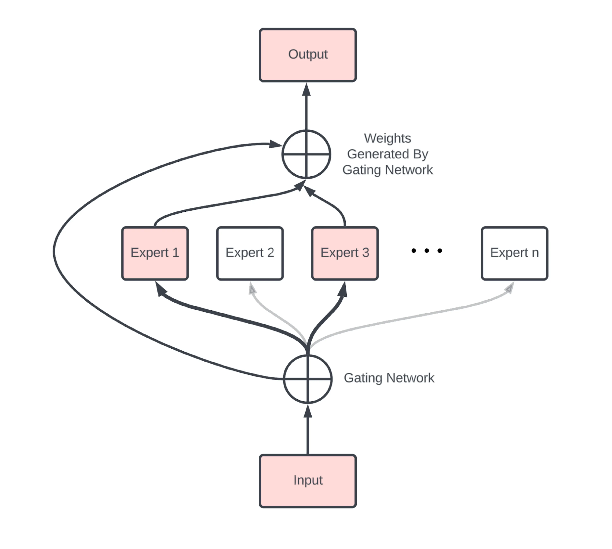
Figure: Main components of MoE. Source: [15].
In most MoE LLMs, the dense Feed-Forward Network (FFN) of Transformers is replaced with a set of experts. The experts are also feed-forward networks, but they are smaller compared to the FFN in Transformers. In general, experts can also be more complex than FFNs, and an expert can even be an MoE itself (known as hierarchical MoE).
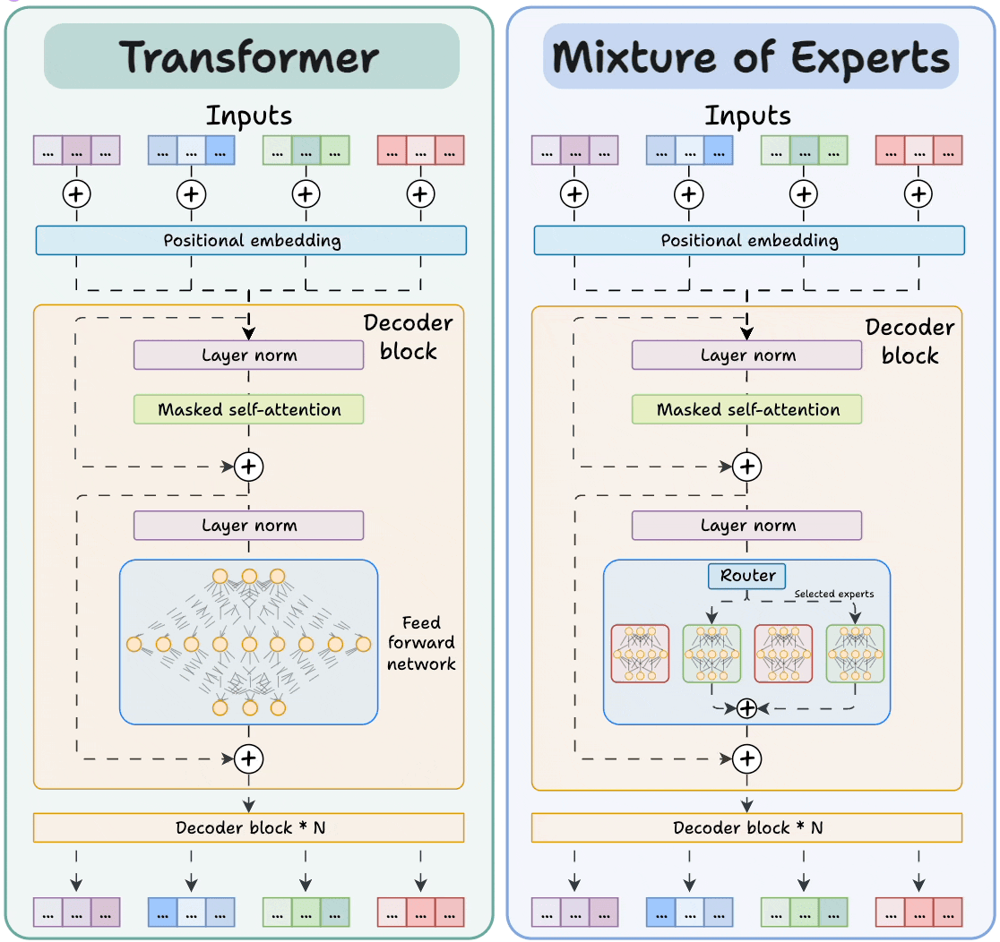
Figure: Transformer vs MoE. Source: [16].
Because LLMs contain many decoder blocks in sequence, input tokens may pass through different experts across the decoder blocks, which results in diverse specialization patterns.
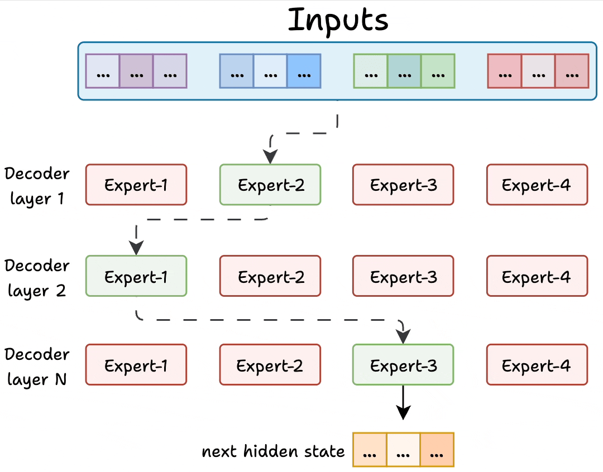
Figure: Experts in decoder layers. Source: [16].
The gating network (router) is also a small FFN that acts like a multi-class classifier and outputs softmax scores over the experts. I.e., the router assigns a probability value to each expert, and determines which experts are activated for a given token.
For instance, in the figure, the router assigned the highest probability value to Expert-1, and selected it for routing the input data to that expert.
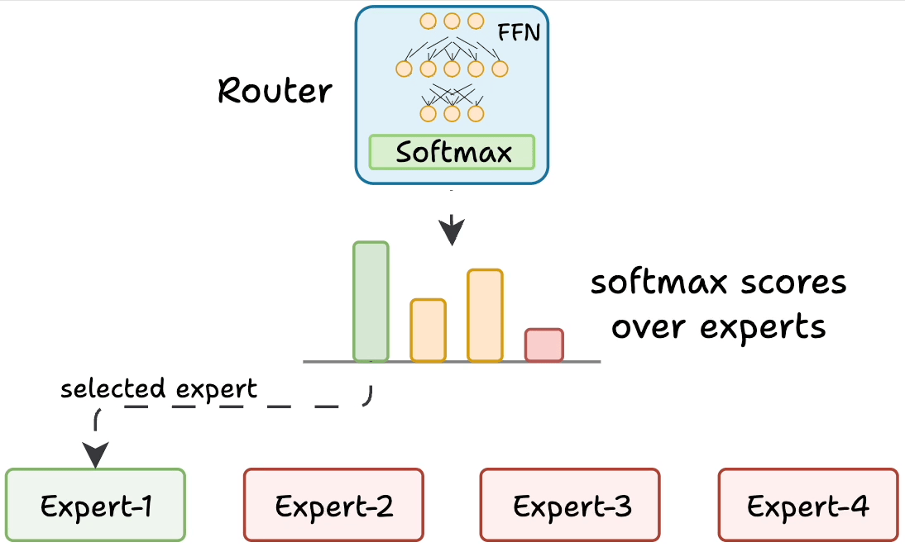
Figure: Gating network (router). Source: [15].
Training an MoE model involves updating both the experts and the gating network, which makes it more challenging than training traditional Transformer models. Specifically, the training can result in a poor routing strategy where the gating network activates only a small number of experts. Such imbalance means that the selected few experts can become overly specialized, while other experts can remain undertrained and underutilized. This imbalance reduces the performance of the entire model.
Consequently, load balancing by the router is critical for MoE performance. Several different strategies have been proposed that penalize overreliance on any one expert, and reward more even utilization of all experts.
In MoE models, each expert learns a different specialization of the overall function. However, the experts do not learn completely separate tasks. Instead, they learn to handle different types of tokens, contexts, or transformations. For example, one expert may learn code-style token patterns, another may learn transformations helpful for math reasoning, then another may specialize in rare domain-specific words, and similar.
20.7.1 Sparsity
The main concept in MoE architectures is the presence of sparse layers, since only some of the experts (and therefore their neurons) are activated for each token. In the original dense layers in FFN of Transformers, all neurons are connected to every neuron in the preceding and following layers. In sparse layers, neurons are connected only to some of the neurons in the neighboring layers.
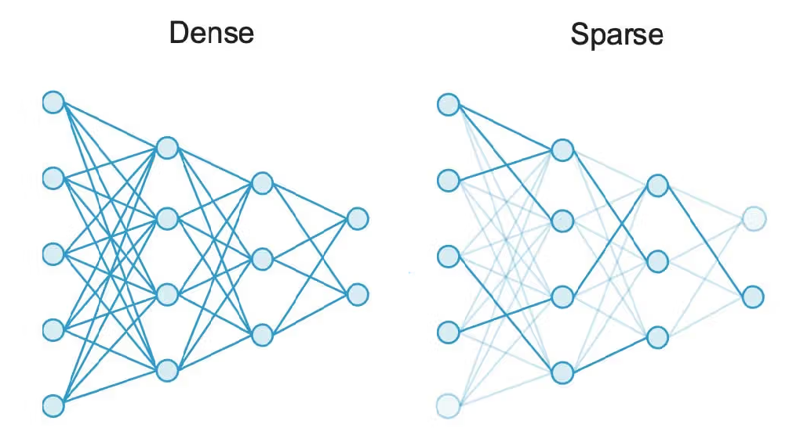
Figure: Dense versus sparse networks. Source: [17].
For example, Mixtral is a well-known MoE LLM that uses 8 experts, each containing approximately 7B parameters. Therefore, the FFN in Mixtral has 8 expert blocks. For every token, the gating network selects two of the eight experts to process the data. Hence, about 14B parameters (two experts) are active during training and inference. Note however, that the overall number of parameters in Mixtral is not exactly 8 x 7B = 56B, since some layers are shared. The total parameter count is around 47B.
The total number of parameters is generally considered a measure of the model capacity. The number of parameters that are used to process an individual token is a measure of the model’s computational cost. Thus, Mixtral has a similar learning capacity to dense LLMs with 47B parameters, but has a much lower computational cost because only 14B parameters are used per token.
Note also that although 14B parameters are active per token, the entire Mixtral model with 47B parameters needs to be loaded into memory to perform inference. In other words, computational efficiency does not reduce the requirement for sufficient RAM/VRAM to load the model.
Other well-known MoE LLMs include Mixtral 8 x 22B, DeepSeek-V3 (671B parameters, with 37B active per token), Qwen3-235B (128 experts in total, 8 experts with 22B parameters active per token), Qwen1.5 (64 experts in total, 4 experts with 2.7B parameters active per token), etc. It is likely that the leading proprietary LLMs (such as GPT, Claude, and Gemini) also use some form of MoE and combine sparse and dense layers, although their architectures have not been publicly disclosed.
20.7.2 MoE Advantages and Disadvantages
MoE models offer several important advantages in LLMs, as follows.
- Sparsity: Instead of activating the entire network for each input token, MoE activates only a small subset of parameters, and much of the model stays inactive for a given token.
- Efficient inference: Because only one or a few experts are used per token, fewer computations are required. This lowers inference-time compute and required memory.
- Faster pretraining: MoE LLMs are significantly faster to pretrain compared to dense models with the same total number of parameters, because each token uses only a fraction of the parameters.
- Higher quality outputs: Expert specialization improves accuracy and overall model performance.
MoE disadvantages include:
- Training instability: Sparse routing can lead to imbalanced expert usage, where a few experts get most of the traffic while others remain underutilized.
- Fine-tuning difficulty: Fine-tuning MoE models is more challenging due to the presence of sparse layers.
- Hardware complexity: MoE requires careful management of memory and compute, especially when experts are distributed across devices.
- Overfitting: Sparse models are more prone to overfitting than dense models if load balancing is insufficient.
20.8 Foundation Models
Foundation Models is a general term for large models trained on tremendous amounts of data with substantial computational resources, resulting in high capabilities for transfer learning to downstream tasks. In other words, these models are scaled along each of the three factors: number of model parameters, size of the training dataset, and amount of computation. The scale of Foundation Models leads to new emergent capabilities, such as the ability to perform well on tasks that the models were not explicitly trained to do. This allows few-shot learning, which refers to finetuning Foundation Models to new downstream tasks by using only a few training data instances for the new task. Similarly, zero-shot learning extends this concept even further, and refers to a model’s ability to generalize to new tasks for which the model hasn’t seen any examples during the training.
LLMs represent early examples of Foundation Models, because LLMs are trained at scale and can be adapted for various NLP tasks, even for tasks they were not trained to perform.
The term Foundation Models is more general than LLMs, and it typically refers to large models that are trained on multimodal data, where the inputs can include text, images, audio, video, and other data sources. Also, the term emphasizes scope and versatility rather than just large size models.
The importance of Foundation Models is in their potential to replace task-specific ML models that are specialized in solving one task (i.e., optimized to perform well on one dataset) with general models that have the capabilities to solve multiple tasks. In other words, these models can serve as a foundation that is adaptable to a broad range of applications.
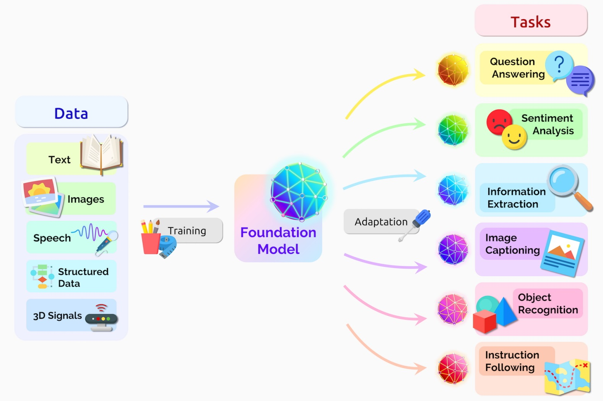
Figure: Foundation model. Source: link.
20.9 Limitations and Ethical Considerations of LLMs
Although LLMs have demonstrated impressive performance across a wide range of tasks, there are several limitations and ethical considerations that raise concerns.
Limitations:
- Computational resources: Training LLMs requires significant computational resources, making it difficult for researchers with limited access to GPUs or specialized hardware to develop and use these models.
- Data bias: LLMs are trained on vast amounts of data from the internet, which often contain biases present in the data. As a result, the models may unintentionally learn and reproduce biases in their generated responses.
- Producing hallucinations: LLMs can produce hallucinations, which are responses that are false, inaccurate, unexpected, or contextually inappropriate.
- Inability to explain: LLMs are inherently black-box models, making it challenging to explain their reasoning or decision-making processes, which is essential in certain applications like healthcare, finance, and legal domains. Recent LLMs have made progress in this area.
Ethical considerations:
- Privacy concerns: LLMs memorize information from their training data, and can potentially reveal sensitive information or violate user privacy.
- Misinformation and manipulation: Text generated by LLMs can be exploited to create disinformation, fake news, or deepfake content that manipulates public opinion and undermines trust.
- Accessibility and fairness: The computational resources and expertise required to train LLMs may lead to an unequal distribution of benefits, where only a few organizations have the resources to develop and control these powerful models.
- Environmental impact: The large-scale training of LLMs consumes a significant amount of energy contributing to carbon emissions, which raises concerns about the environmental sustainability of these models.
Conclusively, it is important to encourage transparency, collaboration, and responsible AI practices to ensure that LLMs benefit all members of society without causing harm.
References
- Introduction to Large Language Models, by Bernhard Mayrhofer, available at https://github.com/datainsightat/introduction_llm.
- Understanding Encoder and Decoder LLMs, by Sebastian Raschka, available at https://magazine.sebastianraschka.com/p/understanding-encoder-and-decoder.
- The Big LLM Architecture Comparison, by Sebastian Raschka, available at https://magazine.sebastianraschka.com/p/the-big-llm-architecture-comparison.
- Linear Layers and Activation Functions in Transformer Models, by Adrian Tam, available at https://machinelearningmastery.com/linear-layers-and-activation-functions-in-transformer-models/.
- LLM Training: RLHF and Its Alternatives, by Sebastian Raschka, available at https://magazine.sebastianraschka.com/p/llm-training-rlhf-and-its-alternatives.
- Training Language Models to Follow Instructions with Human Feedback, by Long Ouyang et al., available at https://arxiv.org/abs/2203.02155.
- Parameter-Efficient LLM Finetuning With Low-Rank Adaptation (LoRA), by Sebastian Raschka, available at https://sebastianraschka.com/blog/2023/llm-finetuning-lora.html.
- How to Fine-tune Llama 2 With LoRA, by Derrick Mwiti, available at https://www.mldive.com/p/how-to-fine-tune-llama-2-with-lora.
- Fine-Tuning Llama 2.0 with Single GPU Magic, by Chee Kean, available at https://ai.plainenglish.io/fine-tuning-llama2-0-with-qloras-single-gpu-magic-1b6a6679d436.
- Fine-Tuning LLaMA 2 Models using a single GPU, QLoRA and AI Notebooks, by Mathieu Busquet, available at https://blog.ovhcloud.com/fine-tuning-llama-2-models-using-a-single-gpu-qlora-and-ai-notebooks/.
- Getting started with Llama, by Meta AI, available at https://ai.meta.com/llama/get-started/.
- Hugging Face: Chat Templates, available at https://huggingface.co/learn/llm-course/en/chapter11/2.
- Post-training 101, by Han Fang, Karthik Abinav Sankararaman, available at https://tokens-for-thoughts.notion.site/post-training-101#262b8b68a46d80a18d03d44d591a972e.
- Llama-3.1 8b + Unsloth 2x faster finetuning, by Unsloth AI, available at https://colab.research.google.com/drive/1Ys44kVvmeZtnICzWz0xgpRnrIOjZAuxp?usp=sharing.
- Mixture of Experts Model(MOE) in AI: What is it and How does it work?, by Sahin Ahmed, available at https://blog.gopenai.com/mixture-of-experts-model-moe-in-ai-what-is-it-and-how-does-it-work-b845ed38a3ab.
- Transformer vs. Mixture of Experts in LLMs, by Avi Chawla, available at https://www.dailydoseofds.com/p/transformer-vs-mixture-of-experts-in-llms/.
- What is Mixture of Experts?, by Dave Bergmann, available at https://www.ibm.com/think/topics/mixture-of-experts.